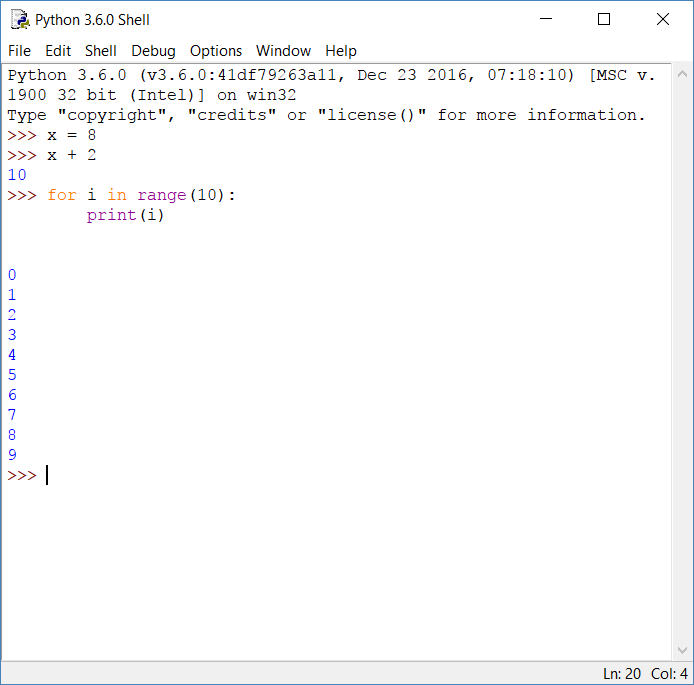
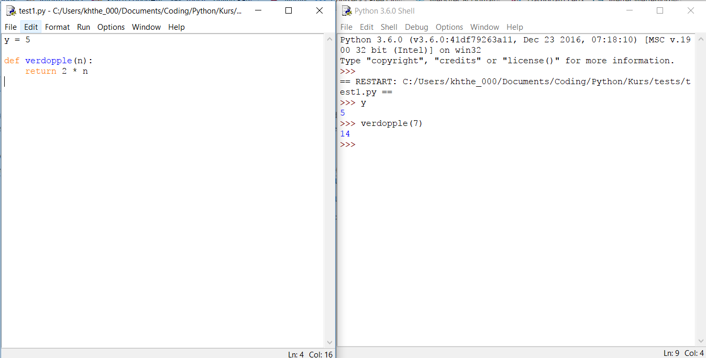

Installiere die aktuelle Version von Python 3 von https://www.python.org/. Bei der Installation wird die Entwicklungsumgebung Idle mitgeliefert. Beim Start von Idle öffnet sich die Python-Shell. Dort können wir direkt mit dem Python-Interpreter kommunizieren: wir können Anweisungen schreiben und Ausdrücke auswerten. Um nach einem eingerückten Block das Programm abzuschließen, müssen wir noch einmal Enter drücken. Alt-p holt die letzte Eingabe zurück.
Mit File - New File öffnet sich das Programmfenster. Hier können wir unsere Anweisungen als Programme (Modul) speichern. Wenn wir das Programm gespeichert haben (Endung .py), können wir es mit Run - Run Module laufen lassen. Alle Variablen oder Funktionen, die in dem Modul gesetzt werden, sind dann auch in der Shell verfügbar.
